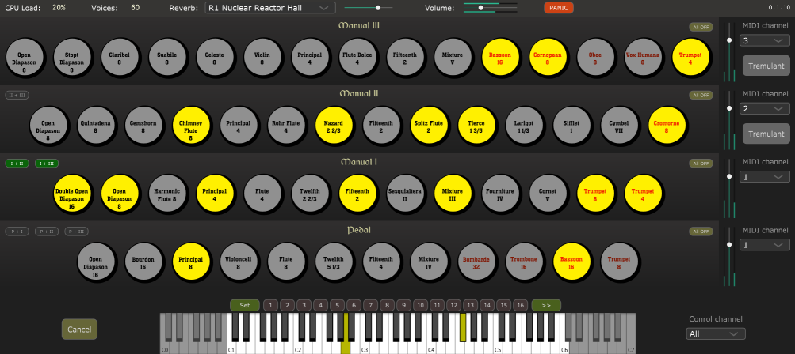

Aeolus is a pipe organ synthesizer (VST plugin) inspired by the original Aeolous project.
The present implementation follows the pipes audio generation of the original Aeolous, but introduces a number of changes and improvements:
The following pieces were performed by David Garner using Aeolus plugin. He kindly provided me with these recordings.
| Walther - Herr Christ Der Ein | |
| Danrieu - Dialogue | |
| Boellmann - Interlude | |
| Bach - Vom Himmel Hoch BWV606 |